Third Space, London
Large-format porcelain and certified tanking to changing areas, wet rooms and the pool surround.
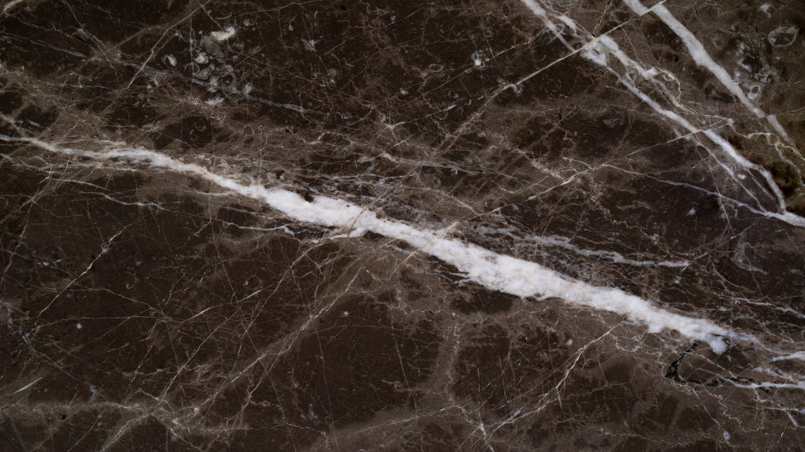
Specialist tiling & stone · London
Wall and floor tiling and stone work for private clients, developers and main contractors. Approved Schlüter tanking contractors.
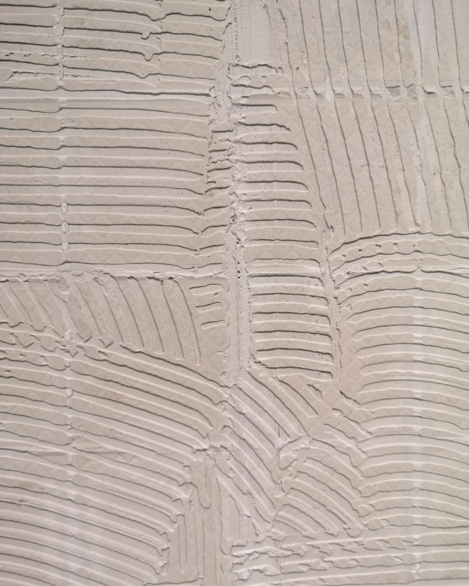
We work alongside architects, designers and main contractors, and directly with private clients, from first survey through to snagging and handover.
Kroll Interiors specialises in wall and floor tiling and stone work for the construction industry, across private London homes and commercial fit-outs. Two disciplines, one contractor, one standard of setting out.
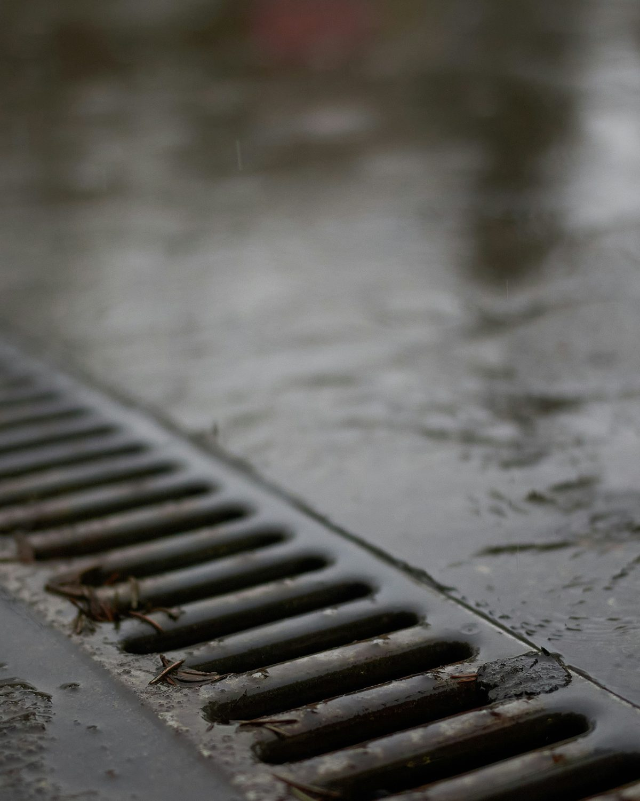
Tile is impervious. Grout is not, and neither is the substrate behind it. Water finds the joints, then the fixings, then the timber or plasterboard underneath.
What keeps it out
A tanking membrane, bonded to the walls and floor before tiling and sealed at every corner, penetration and drain upstand.
The build-up
Substrate, tanking and movement joints are specified before a single tile is cut. It is the part nobody sees, and the only reason the part they do see still looks right in ten years.
Two commercial leisure fit-outs, shown in the project films shot on site.
Porcelain, natural stone, granite and engineered stone each need different substrates, adhesives and joint strategies.
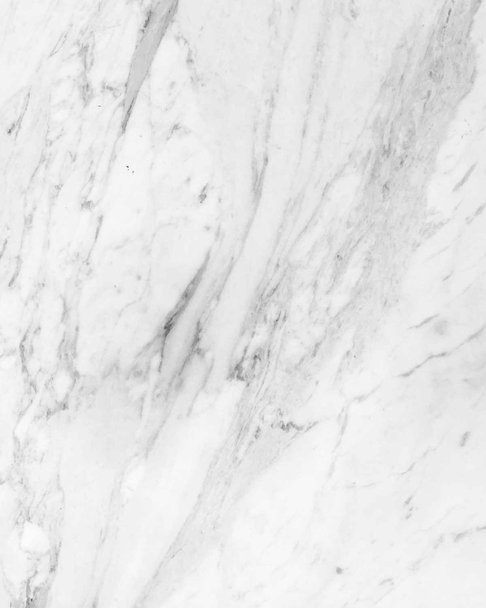
Marble
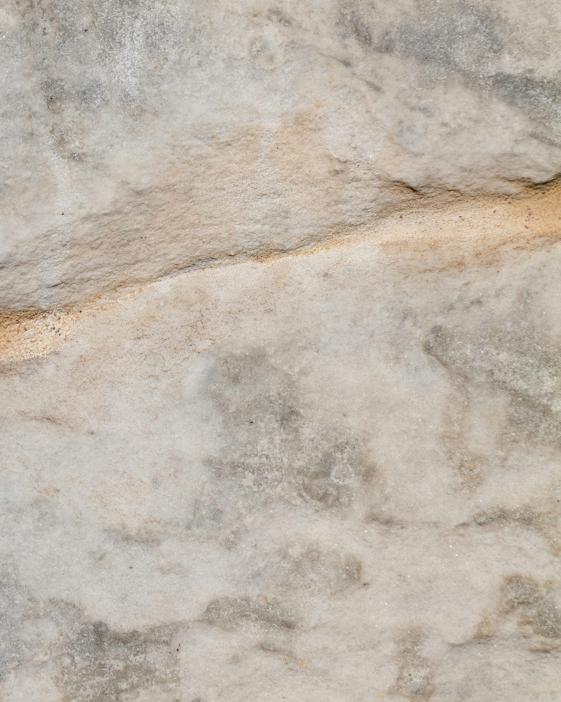
Limestone
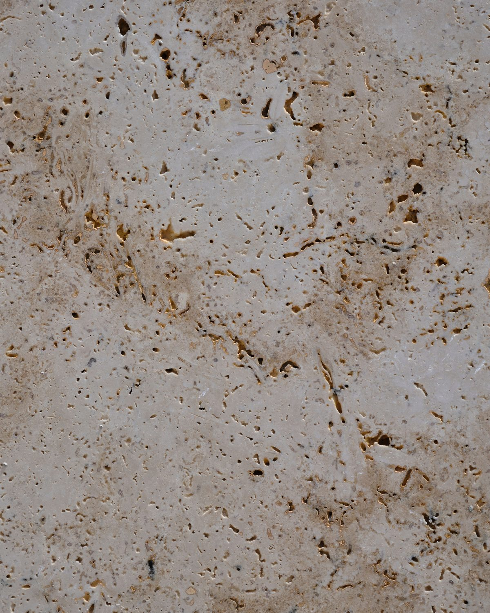
Travertine
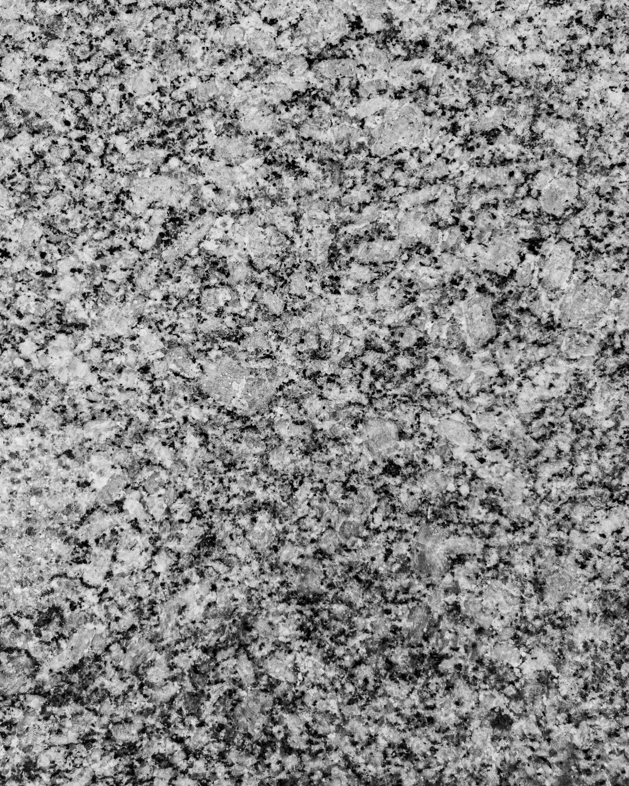
Granite
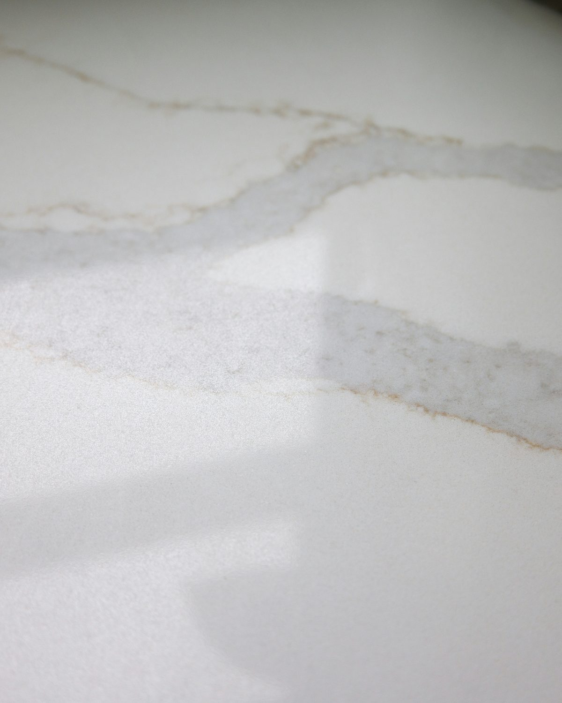
Quartz
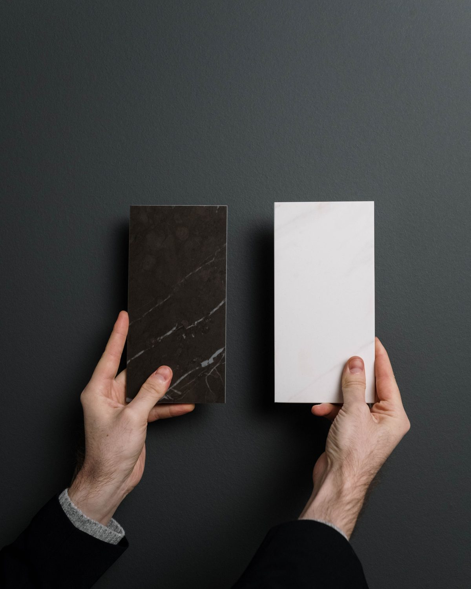
Porcelain
Choosing the material is the start of the specification, not the end.
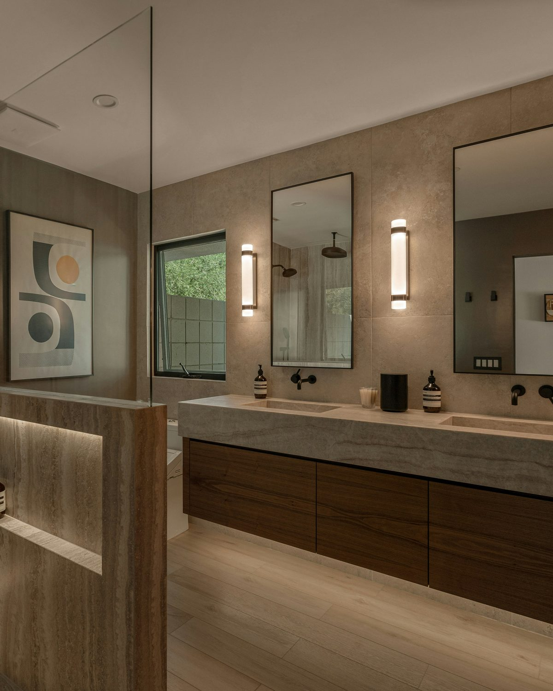
Luxury residential
Bathrooms, wet rooms, kitchens, hallways and whole-house schemes for private London homes.
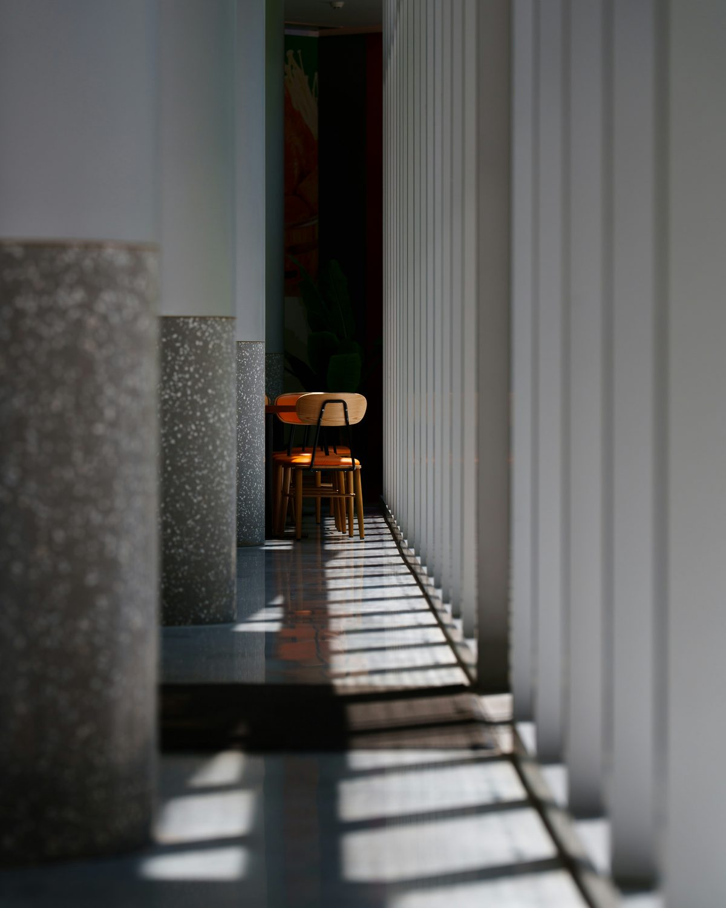
Commercial fit-out
Tiling and stone for developers and main contractors, working to the drawing and the programme.

Send the rooms, the materials you are considering and your timeline. We will come back with a measured quote, not a guess from a price list.